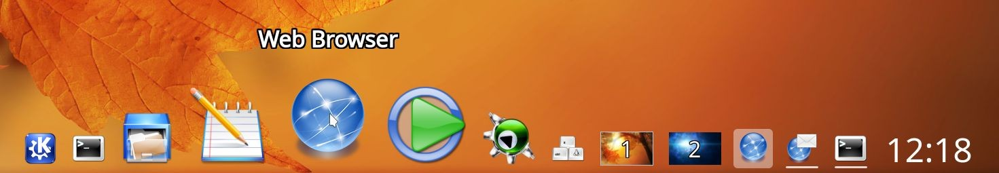

KSmoothDock - A cool desktop panel for KDE Plasma 5
KSmoothDock is a cool desktop panel with parabolic zooming effect for KDE Plasma 5. While visually it is inspired by Mac OS X's Dock, it aims to follow the traditional Linux model of desktop panel with application menu, launchers, pager, taskbar and system tray. Currently KSmoothDock only supports launchers and pager, and is meant to use in conjunction with a Plasma 5 panel that provides application menu, taskbar and system tray.
- Download: For latest releases, please visit KSmoothDock's page at kde.org
- Documentation: Please visit Documentation
- Bugs/feature requests: Please visit Issues page. Please check if the issue has already been filed before creating a new one.
- Code: The source code is hosted at GitHub